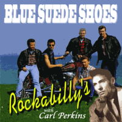

the Rockabilly's - Blue Suede Shoes (Album, 2010)
01 - Birth Of Rock'n'Roll (3:52)
02 - High School Confidential (2:16)
03 - Reelin' And Rockin' (3:25)
04 - Dream Girl (2:16)
05 - Warm Beer In The Morning (2:25)
06 - Boppin' The Blues (2:29)
07 - Blue Jean Bop (feat. Carl Perkins) (2:31)
08 - Blue Suede Shoes (feat. Carl Perkins) (2:54)
09 - Honey Don't (feat. Carl Perkins) (2:55)
10 - Matchbox (feat. Carl Perkins) (2:16)
11 - Whole Lotta Shakin' Goin' On (feat. Carl Perkins) (3:48)
12 - Glad All Over (3:39)
13 - Blues Medley (2:44)
14 - Lovin' Up A Storm (1:57)
15 - Stik Mig En Bajer (2:10)
© CBA 2016 :: [Digital]
Notes
Review
200/366 (Project 366)
So 200, so Rockabilly band from Denmark and Carl Perkins. Energetic Rock'n'Roll. Very special.